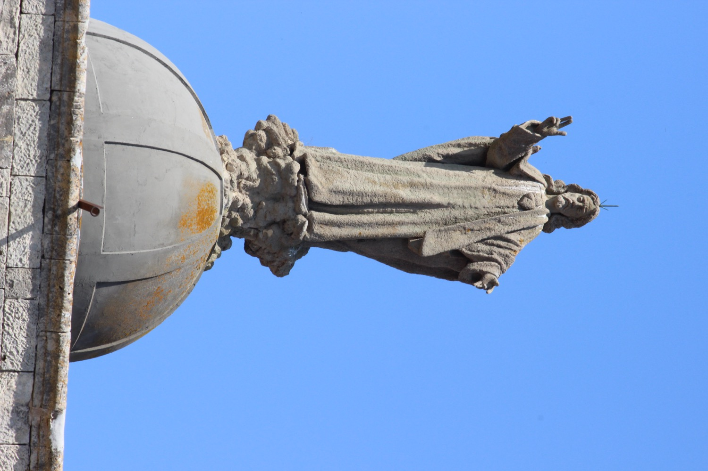

El Sagrado Corazón de Jesús simboliza el amor y la misericordia de Jesús hacia la humanidad. Esta escultura de Jesús con el Sagrado Corazón sobre el pecho es obra del escultor Miquel Vadell, con la ayuda del maestro de obras local Joan Bauzà Font (1942). Mide 6 m de altura, incluido el pedestal, y está realizada en cemento Portland armado. El Sagrado Corazón aparece coronado por llamas, símbolo del amor ardiente de Jesús hacia la humanidad. Jesús hace el gesto de bendecir el pueblo con la mano derecha.